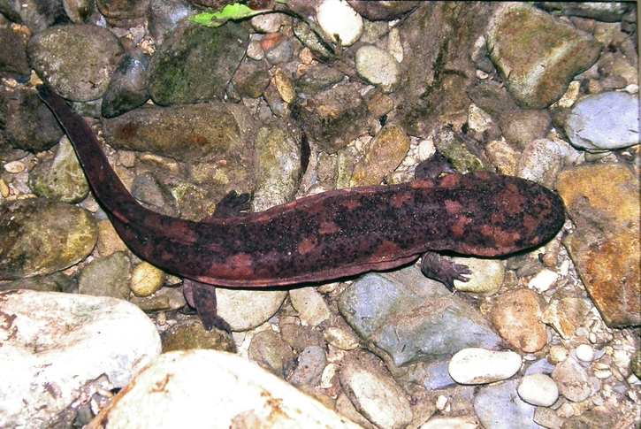

Chinese Giant Salamander

The Chinese Giant Salamander (Andrias Davidianas) is the world’s
largest amphibian, growing to lengths of up to 6 feet. It used to be
common throughout central, southwestern and southern China,
where it lives in streams in the forested hills and lays up to 500 eggs
at a time in underwater burrows guarded by the male. However, the Chinese
Giant Salamander has now almost completely disappeared due to its
over-exploitation as a food source.